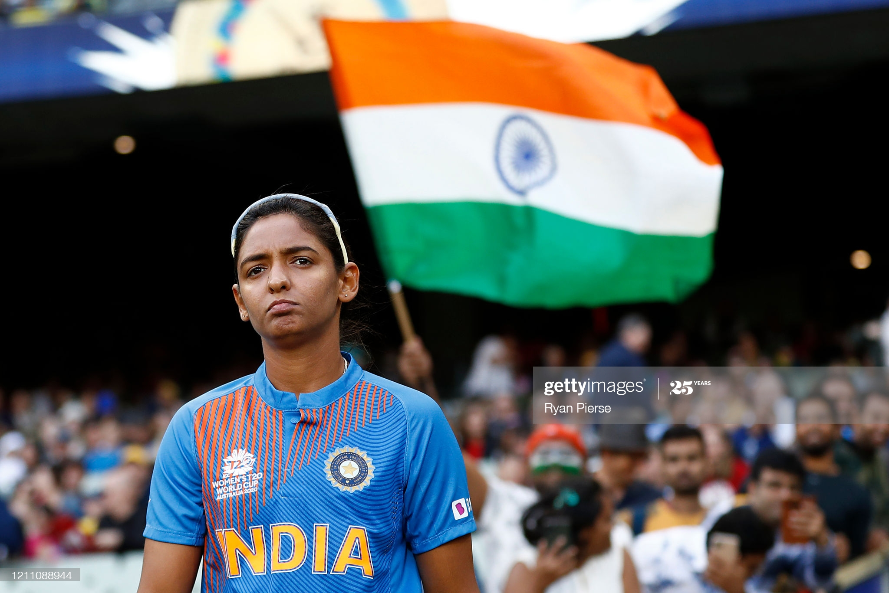

Harmanpreet Kaur

Wikipedia says:
Harmanpreet Kaur (born on 8 March 1989) is an Indian cricketer.She plays as an all-rounder for the Indian women's cricket team and was awarded the prestigious Arjuna Award for Cricket in the year 2017 by the Ministry of Youth Affairs and Sports.
In November 2018, she became the first woman for India to score a century in a Women's Twenty20 International (WT20I) match. In October 2019, during the series against South Africa, she became the first cricketer for India, male or female, to play in 100 international Twenty20 matches.